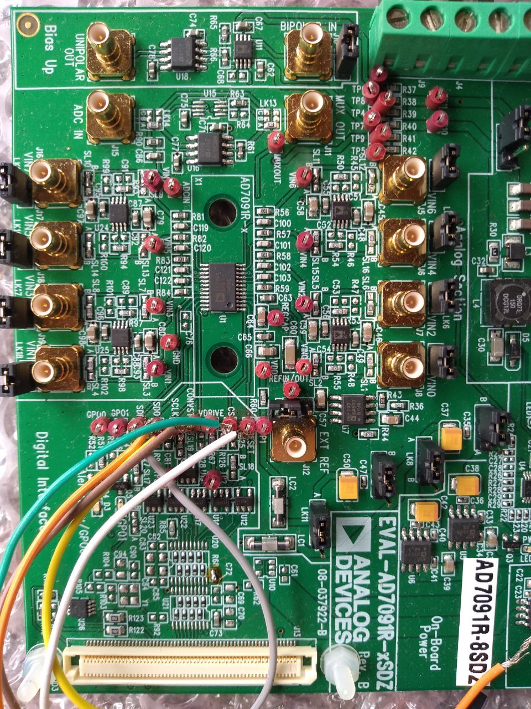
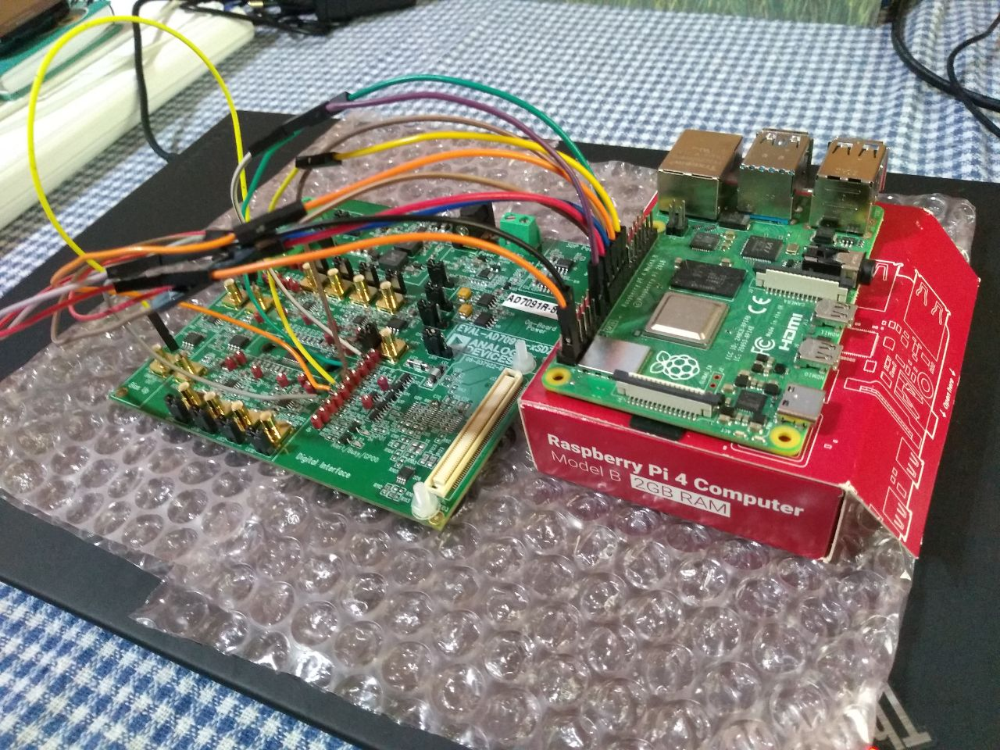

AD7091R-2/-4/-8 ADC Linux Driver¶
Supported Devices¶
Evaluation Boards¶
Status¶
| Source | Mainlined? |
|---|---|
| git | Yes |
Files¶
| Function | File |
|---|---|
| header | drivers/iio/adc/ad7091r-base.h |
| base driver | drivers/iio/adc/ad7091r-base.c |
| chip driver | drivers/iio/adc/ad7091r8.c |
| devicetree bindings | Documentation/devicetree/bindings/iio/adc/adi,ad7091r5.yaml |
Overview¶
The ad7091r-2, ad7091r-4, and AD7091r-8 are 2-/4-/8-channel, ultra lowpower power dissipation, 1 MSPS successive approximation register (SAR) analog-to-digital converter (ADC). The AD7091R-2/-4/-8 ADCs are multichannel versions of AD7091r. The AD7091R-2/AD7091R-4/AD7091R-8 operates from a single 2.7 V to 5.25 V power supply and is capable of achieving a sampling rate of 1 MSPS.
The AD7091R-2/AD7091R-4/AD7091R-8 family offers up to eight single-ended analog input channels with a channel sequencer that allows a preprogrammed selection of channels to be converted sequentially.
The conversion process and data acquisition are controlled using the CONVST pin, which is pulsed on every read to the conversion result register. Writing and reading to registers other than the conversion result register will not trigger a pulse on the CONVST line.
Hardware configuration¶
Use the test points for interfacing the EVAL-AD7091R-xSDZ with a machine running Linux.
The instructions below describe how to set up EVAL-AD7091R-xSDZ with RPI-4.
The evaluation board default configuration is intended to work with EVAL-SDP-CB1Z so it must be adapted to connect to a different platform.
For the jumper links, use the following configuration:
| Link | Link Position |
|---|---|
| LK1 | B |
| LK2 | B |
| LK3 | B |
| LK8 | A |
| LK9 | B |
| LK11 | A |
Use a soldering iron to change a few soldering links.
Unsolder R126 (enable drive CS through CS test point)
Unsolder R127 (enable drive SDI through SDI test point)
Unsolder R128 (enable drive CONVST through CONVST test point)
Unsolder SL19 (enable drive SCLK through SCLK test point)
Unsolder SL20 (enable drive SDO through SDO test point)
Power VDD and Vdrive supplied with RPI-4 3.3V pins.
Solder R68 points together (enable drive the RESET pin through RESET test point)
Unsolder LK13 and LK14 from position A and solder them in position C (tie MUX_OUT with ADC_IN).
Unsolder SL09 and SL10 from position A and solder each of them to position B to allow the VIN7 signal to bypass the input buffer.
After the changes in the link positions and soldering links, the EVAL-AD7091R-xSDZ evaluation board should look like the following.
There are a number of connections to make between the ADC evaluation board and the Linux machine.
| EVAL-AD7091R-xSDZ test point | Pin Function | RPI-4 Pin function (Pin number) |
|---|---|---|
| CS | Chip Select | CE0 (pin 24) |
| SCLK | Serial Clock | SCLK (pin 23) |
| SDO | Serial Data Out | MISO (pin 21) |
| SDI | Serial Data In | MOSI (pin 19) |
| RESET | ADC Reset | GPIO 27 (pin 13) |
| CONVST | Conversion Start Signal | GPIO 25 (pin 22) |
| VDRIVE (J4) | Digital Supply Voltage Input | 3.3V (pin 17 |
| GND (J4) | Digital Supply Voltage Ground | GND (pin 20) |
| VDD (J9) | Power Supply Input | 3.3V (pin 1) |
| GND (J9) | Power Supply Ground | GND (pin 6) |
Where J4 is the external VDRIVE and GND power connector and J9 is the external VDD and GND power connector.
Here is how it looks after everything is connected.
The collection of jumpers looks messy and hard to follow so review the textual description in case of doubt.
Adding Linux driver support¶
Enabling the driver¶
Configure kernel with “make menuconfig” (alternatively use “make xconfig” or “make qconfig”)
Note
The AD7091R8 Driver depends on CONFIG_SPI
Linux Kernel Configuration
Device Drivers --->
...
<*> Industrial I/O support --->
--- Industrial I/O support
...
Analog to digital converters --->
...
<*> Analog Devices AD7091R8 ADC driver
...
...
...
Adding a device tree entry¶
Required properties¶
compatible: Must be one of “adi,ad7091r2”, “adi,ad7091r4”, “adi,ad7091r8”.
reg: number of SPI chip select id for the device.
adi,conversion-start-gpios: Device tree identifier of the CONVST pin.
reset-gpios: Device tree identifier of the RESET pin.
Optional properties¶
vref-supply: phandle + specifier to a regulator for the external VREF supply. If no external VREF is supplied this attribute should be omitted. see: Documentation/devicetree/bindings/regulator/regulator.txt
Device tree generic example¶
#include <dt-bindings/interrupt-controller/irq.h>
#include <dt-bindings/gpio/gpio.h>
spi {
#address-cells = <1>;
#size-cells = <0>;
adc@0 {
compatible = "adi,ad7091r8";
reg = <0x0>;
spi-max-frequency = <45454545>;
vref-supply = <&adc_vref>;
convst-gpios = <&gpio 25 GPIO_ACTIVE_LOW>;
reset-gpios = <&gpio 27 GPIO_ACTIVE_LOW>;
interrupts = <22 IRQ_TYPE_EDGE_FALLING>;
interrupt-parent = <&gpio>;
};
};
Device tree overlay example¶
// SPDX-License-Identifier: GPL-2.0
/dts-v1/;
/plugin/;
#include <dt-bindings/interrupt-controller/irq.h>
#include <dt-bindings/gpio/gpio.h>
/ {
compatible = "brcm,bcm2835", "brcm,bcm2711";
};
&gpio {
ad7091r8_pins: ad7091r8_pins {
brcm,pins = <22>; // interrupt
brcm,function = <0>; // input
};
};
&spi0 {
status = "okay";
cs-gpios = <&gpio 8 GPIO_ACTIVE_LOW>;
ad7091r8@0 {
compatible = "adi,ad7091r8";
reg = <0x0>;
spi-max-frequency = <1000000>;
convst-gpios = <&gpio 25 GPIO_ACTIVE_LOW>;
reset-gpios = <&gpio 27 GPIO_ACTIVE_LOW>;
pinctrl-names = "default";
pinctrl-0 = <&ad7091r8_pins>;
interrupt-parent = <&gpio>;
interrupts = <22 IRQ_TYPE_EDGE_FALLING>;
};
};
&spidev0 {
status = "disabled";
};
&spidev1 {
status = "disabled";
};
Driver testing¶
Note
TIP: An example program whiroot@analog:/sys/bus/iio/devices# ls -lch uses the interface can be found here:
Show device name¶
Note
Hint
This specifies any shell prompt running on the target
marcelo@raspberrypi:~ $ cat /sys/bus/iio/devices/iio:device0/name
ad7091r-8
Show channel scale
Description: Scale to be applied to in_voltageX_raw in order to obtain the measured voltage in millivolts
Note
Hint
This specifies any shell prompt running on the target
marcelo@raspberrypi:~ $ cat /sys/bus/iio/devices/iio:device0/in_voltage_scale
0.610351562
Example test single-shot readings through IIO device sysfs interface.
Note
Hint
This specifies any shell prompt running on the target
marcelo@raspberrypi:~ $ ls -l /sys/bus/iio/devices/iio:device0/
total 0
-rw-r--r-- 1 root root 4096 Sep 14 13:24 in_voltage0_raw
-rw-r--r-- 1 root root 4096 Sep 14 13:24 in_voltage1_raw
-rw-r--r-- 1 root root 4096 Sep 14 13:24 in_voltage2_raw
-rw-r--r-- 1 root root 4096 Sep 14 13:24 in_voltage3_raw
-rw-r--r-- 1 root root 4096 Sep 14 13:24 in_voltage4_raw
-rw-r--r-- 1 root root 4096 Sep 14 13:24 in_voltage5_raw
-rw-r--r-- 1 root root 4096 Sep 14 13:24 in_voltage6_raw
-rw-r--r-- 1 root root 4096 Sep 14 13:24 in_voltage7_raw
-rw-r--r-- 1 root root 4096 Sep 14 13:24 in_voltage_scale
-r--r--r-- 1 root root 4096 Sep 14 13:24 name
lrwxrwxrwx 1 root root 0 Sep 14 13:24 of_node -> ../../../../../../../../firmware/devicetree/base/soc/spi@7e204000/ad7091r8@0
drwxr-xr-x 2 root root 0 Sep 14 13:24 power
lrwxrwxrwx 1 root root 0 Sep 14 13:24 subsystem -> ../../../../../../../../bus/iio
-rw-r--r-- 1 root root 4096 Sep 14 13:24 uevent
marcelo@raspberrypi:~ $ cat /sys/bus/iio/devices/iio:device0/in_voltage_scale
0.610351562
marcelo@raspberrypi:~ $ cat /sys/bus/iio/devices/iio:device0/in_voltage0_raw
2711
marcelo@raspberrypi:~ $ cat /sys/bus/iio/devices/iio:device0/in_voltage0_raw
2717
marcelo@raspberrypi:~ $ cat /sys/bus/iio/devices/iio:device0/in_voltage0_raw
2716
marcelo@raspberrypi:~ $ cat /sys/bus/iio/devices/iio:device0/in_voltage2_raw
2715
marcelo@raspberrypi:~ $ cat /sys/bus/iio/devices/iio:device0/in_voltage5_raw
1
marcelo@raspberrypi:~ $ cat /sys/bus/iio/devices/iio:device0/in_voltage1_raw
1428
marcelo@raspberrypi:~ $ cat /sys/bus/iio/devices/iio:device0/in_voltage6_raw
1
Play with IIO events
Description: IIO events are a way for the IIO subsystem to notify applications when some event of importance happens.
Example monitoring IIO events and being notified when ADC readings fall above or below the limit registers.
The voltage supplied to channel 6 is roughly 1.63V throughout the example.
Two shells/terminals are used. First, in one of the shells, run iio_event_monitor to catch IIO events.
Then, on the other shell, configure device low limit and high limit registers and experiment with them.
The commands and output on the device shell are shown first followed by the commands and output on the shell monitoring IIO events.
Note
Hint
This specifies any shell prompt running on the target
marcelo@raspberrypi:~ $ sudo su
root@raspberrypi:~# cd /sys/bus/iio/devices/iio:device0/events/
root@raspberrypi:/sys/bus/iio/devices/iio:device0/events#
root@raspberrypi:/sys/bus/iio/devices/iio:device0/events# ls -l
total 0
-rw-r--r-- 1 root root 4096 Dec 19 17:34 in_voltage0_thresh_either_hysteresis
-rw-r--r-- 1 root root 4096 Dec 19 17:34 in_voltage0_thresh_falling_en
-rw-r--r-- 1 root root 4096 Dec 19 17:34 in_voltage0_thresh_falling_value
-rw-r--r-- 1 root root 4096 Dec 19 17:34 in_voltage0_thresh_rising_en
-rw-r--r-- 1 root root 4096 Dec 19 17:34 in_voltage0_thresh_rising_value
-rw-r--r-- 1 root root 4096 Dec 19 17:34 in_voltage1_thresh_either_hysteresis
-rw-r--r-- 1 root root 4096 Dec 19 17:34 in_voltage1_thresh_falling_en
-rw-r--r-- 1 root root 4096 Dec 19 17:34 in_voltage1_thresh_falling_value
-rw-r--r-- 1 root root 4096 Dec 19 17:34 in_voltage1_thresh_rising_en
-rw-r--r-- 1 root root 4096 Dec 19 17:34 in_voltage1_thresh_rising_value
-rw-r--r-- 1 root root 4096 Dec 19 17:34 in_voltage2_thresh_either_hysteresis
-rw-r--r-- 1 root root 4096 Dec 19 17:34 in_voltage2_thresh_falling_en
-rw-r--r-- 1 root root 4096 Dec 19 17:34 in_voltage2_thresh_falling_value
-rw-r--r-- 1 root root 4096 Dec 19 17:34 in_voltage2_thresh_rising_en
-rw-r--r-- 1 root root 4096 Dec 19 17:34 in_voltage2_thresh_rising_value
-rw-r--r-- 1 root root 4096 Dec 19 17:34 in_voltage3_thresh_either_hysteresis
-rw-r--r-- 1 root root 4096 Dec 19 17:34 in_voltage3_thresh_falling_en
-rw-r--r-- 1 root root 4096 Dec 19 17:34 in_voltage3_thresh_falling_value
-rw-r--r-- 1 root root 4096 Dec 19 17:34 in_voltage3_thresh_rising_en
-rw-r--r-- 1 root root 4096 Dec 19 17:34 in_voltage3_thresh_rising_value
-rw-r--r-- 1 root root 4096 Dec 19 17:34 in_voltage4_thresh_either_hysteresis
-rw-r--r-- 1 root root 4096 Dec 19 17:34 in_voltage4_thresh_falling_en
-rw-r--r-- 1 root root 4096 Dec 19 17:34 in_voltage4_thresh_falling_value
-rw-r--r-- 1 root root 4096 Dec 19 17:34 in_voltage4_thresh_rising_en
-rw-r--r-- 1 root root 4096 Dec 19 17:34 in_voltage4_thresh_rising_value
-rw-r--r-- 1 root root 4096 Dec 19 17:34 in_voltage5_thresh_either_hysteresis
-rw-r--r-- 1 root root 4096 Dec 19 17:34 in_voltage5_thresh_falling_en
-rw-r--r-- 1 root root 4096 Dec 19 17:34 in_voltage5_thresh_falling_value
-rw-r--r-- 1 root root 4096 Dec 19 17:34 in_voltage5_thresh_rising_en
-rw-r--r-- 1 root root 4096 Dec 19 17:34 in_voltage5_thresh_rising_value
-rw-r--r-- 1 root root 4096 Dec 19 17:34 in_voltage6_thresh_either_hysteresis
-rw-r--r-- 1 root root 4096 Dec 19 17:38 in_voltage6_thresh_falling_en
-rw-r--r-- 1 root root 4096 Dec 19 17:38 in_voltage6_thresh_falling_value
-rw-r--r-- 1 root root 4096 Dec 19 17:38 in_voltage6_thresh_rising_en
-rw-r--r-- 1 root root 4096 Dec 19 17:37 in_voltage6_thresh_rising_value
-rw-r--r-- 1 root root 4096 Dec 19 17:34 in_voltage7_thresh_either_hysteresis
-rw-r--r-- 1 root root 4096 Dec 19 17:34 in_voltage7_thresh_falling_en
-rw-r--r-- 1 root root 4096 Dec 19 17:34 in_voltage7_thresh_falling_value
-rw-r--r-- 1 root root 4096 Dec 19 17:34 in_voltage7_thresh_rising_en
-rw-r--r-- 1 root root 4096 Dec 19 17:34 in_voltage7_thresh_rising_value
root@raspberrypi:/sys/bus/iio/devices/iio:device0# cat in_voltage6_raw
2685
root@raspberrypi:/sys/bus/iio/devices/iio:device0# echo 300 > events/in_voltage6_thresh_falling_value
root@raspberrypi:/sys/bus/iio/devices/iio:device0# cat events/in_voltage6_thresh_falling_value
2400
root@raspberrypi:/sys/bus/iio/devices/iio:device0# cat in_voltage6_raw
2677
root@raspberrypi:/sys/bus/iio/devices/iio:device0# cat in_voltage6_raw
2692
root@raspberrypi:/sys/bus/iio/devices/iio:device0# echo 400 > events/in_voltage6_thresh_falling_value
root@raspberrypi:/sys/bus/iio/devices/iio:device0# cat events/in_voltage6_thresh_falling_value
3200
root@raspberrypi:/sys/bus/iio/devices/iio:device0# cat in_voltage6_raw
2690
root@raspberrypi:/sys/bus/iio/devices/iio:device0# cat in_voltage6_raw
2699
root@raspberrypi:/sys/bus/iio/devices/iio:device0# cat in_voltage6_raw
2693
root@raspberrypi:/sys/bus/iio/devices/iio:device0# echo 300 > events/in_voltage6_thresh_rising_value
root@raspberrypi:/sys/bus/iio/devices/iio:device0# cat in_voltage6_raw
2680
root@raspberrypi:/sys/bus/iio/devices/iio:device0# cat in_voltage6_raw
2692
root@raspberrypi:/sys/bus/iio/devices/iio:device0# echo 0 > events/in_voltage6_thresh_rising_en
root@raspberrypi:/sys/bus/iio/devices/iio:device0# cat in_voltage6_raw
2680
root@raspberrypi:/sys/bus/iio/devices/iio:device0# echo 0 > events/in_voltage6_thresh_falling_en
root@raspberrypi:/sys/bus/iio/devices/iio:device0# cat in_voltage6_raw
2694
The iio_event_monitor program can be obtained from the Linux kernel sources.
Note
Hint
This specifies any shell prompt running on the target
marcelo@raspberrypi:~ $ ./lsiio
Device 000: ad7091r-8
marcelo@raspberrypi:~ $ sudo ./iio_event_monitor ad7091r-8
Found IIO device with name ad7091r-8 with device number 0
Event: time: 1703012520403164042, type: voltage, channel: 6, evtype: thresh, direction: falling
Event: time: 1703012523186611078, type: voltage, channel: 6, evtype: thresh, direction: falling
Event: time: 1703012524620682715, type: voltage, channel: 6, evtype: thresh, direction: falling
Event: time: 1703012610162721061, type: voltage, channel: 6, evtype: thresh, direction: rising
Event: time: 1703012610162721061, type: voltage, channel: 6, evtype: thresh, direction: falling
Event: time: 1703012612973228804, type: voltage, channel: 6, evtype: thresh, direction: rising
Event: time: 1703012612973228804, type: voltage, channel: 6, evtype: thresh, direction: falling
Event: time: 1703012646651554473, type: voltage, channel: 6, evtype: thresh, direction: falling